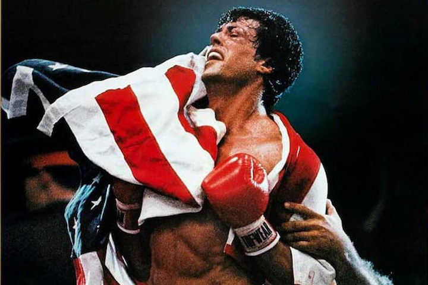

Another Movie genre I love is one that inspires people and encourages them to do their best. Many movies have been made to show people that if you work hard enough, you can achive your dreams and here are soem of my favorites.
The Devil Wears Prada is a wonderful film released in 2006 staring Anne Hathaway, Meryl Streep, and Emily Blunt, directed by David Frankel. Andy is a girl living in New York City aspiring to become a journalist, and lands a job at a major fashion magazine, yet knows nothing about fashion and she's working for a rigorus (some would say scary) boss. Andy goes to fashion galas and Paris but still has to work extremley hard and this so called dream job that "a million girls would kill for". Will she make the best of it, or crack under the pressure of Marina Perisley?
Rocky is an absolute classic movie and appears on almost every "Greatest Movie's of All Time" list. Released in 1976, directed by Sylvester Stallone, staring Sylvester Stallone as Rocky Balboa, tells a tale of a boxer from Philidelphia that is a nobody until boxing champion of the country (Apollo Creed) scouts him out, and wants to play the "Italian Stallion" almost as a charity case. Rocky trains for months, falls in love and starts to get publicity from major news stations. Stay tuned and watch the movie to see who wins the big match!
